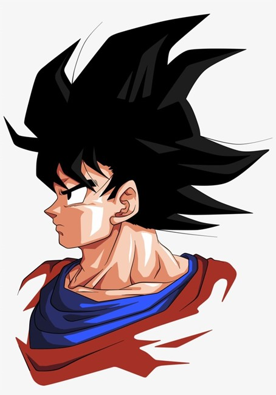
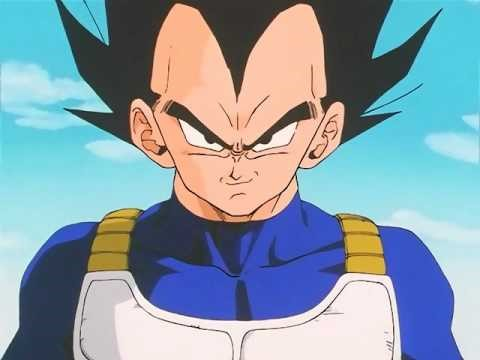

Dragonball Z is a Japanese anime television series produced by Toei Animation. It is the sequel to Dragon Ball and adapts the latter 325 chapters of the original 519-chapter Dragon Ball manga series created by Akira Toriyama which ran in Weekly Shōnen Jump from 1984 to 1995. Dragon Ball Z aired in Japan on Fuji TV from April 1989 to January 1996, before getting dubbed in territories including the United States, Canada, Australia, Europe, Asia, India and Latin America. It was broadcast in at least 81 countries worldwide. It is part of the Dragon Ball media franchise. Read More..
Heroes
Goku
Goku is a Saiyan originally sent to destroy Earth as an infant. However, a head injury at an early age alters his memory, ridding him of his initial destructive nature and allowing him to grow up to become one of Earth's greatest defenders. He constantly strives and trains to be the greatest warrior possible, which has kept the Earth and the universe safe from destruction many times. Read More..
Vegeta
Regal, egotistical, and full of pride, Vegeta was once a ruthless, cold-blooded warrior and outright killer, but later abandons his role in the Frieza Force, instead opting to remain and live on Earth. His character evolves from villain, to anti-hero, then to hero through the course of the series, repeatedly fighting alongside the universe's most powerful warriors in order to protect his new home and surpass Goku in power. Read More..